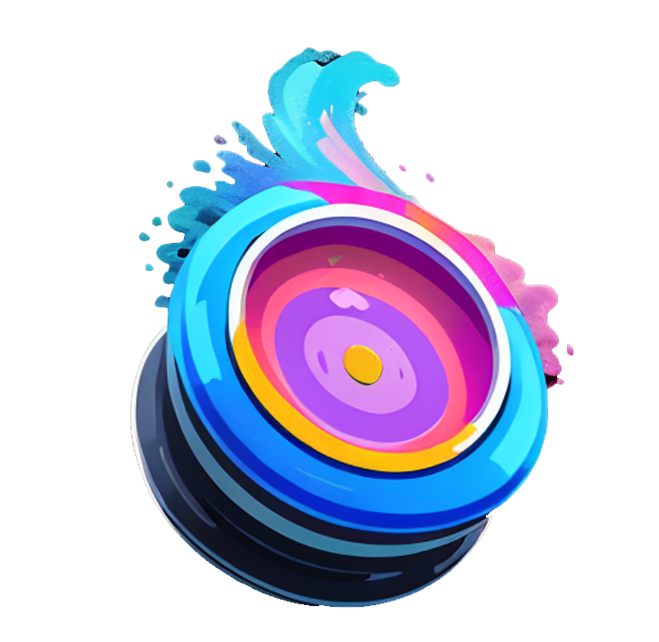
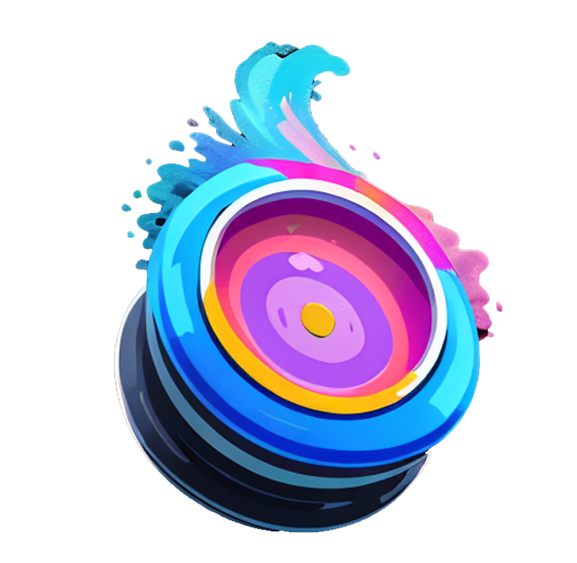

Quickstart: Gyre and RunPod
Start with a few clicks - no technical skills required. Combine the easiness of a cloud service with the flexibilty and privacy of local installation.
No need for local hardware - perfect for Mac users
No technical skills required - have a look.
Data privacy
You have your own environment similar to a local installation and not like a shared cloud service.
No Content filter
Most image generation cloud services have the issue of restricting certain keywords or filtering the resulting images. However, since it's your environment, you have the freedom to activate or deactivate this feature as you like.
Use custom models
Add URLs at start-up to load the models you want to use.
Affordable prices, multi user
Starts with 0,29$ per hour. Can be started within minutes and stopped within seconds.
 
